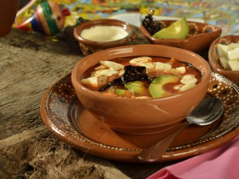
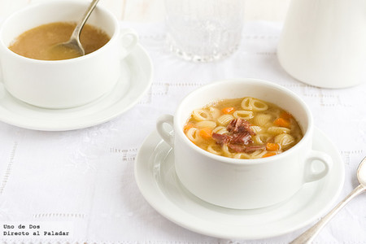

El acceso a esta página ha sido denegado.

Confirma que eres humano, por favor.
Se ha denegado el acceso a esta página porque creemos que estás usando herramientas de automatización para navegar por el sitio web.
Esto puede pasar como resultado de lo siguiente:
Javascript está desactivado o bloqueado por una extensión (bloqueador de anuncios, por ejemplo) Tu navegador no soporta cookiesPor favor, asegúrate que Javascript y las cookies están activadas en tu navegador y que no se está bloqueando su carga.
ID de referencia: #b5c26570-d071-11eb-afec-8b319ade31fe
Powered by PerimeterX , Inc
